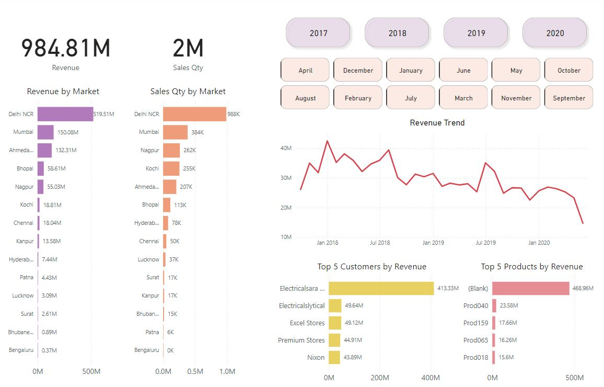

Data Visualization Using Power BI Dashboard
GitHub
All code is available on my GitHub.
Problem Statement
A hardware company that exports computer peripherals faced challenges with fragmented sales reporting. The Sales Director relied on verbal updates from regional managers, leading to potential inaccuracies and difficulty in tracking real-time business performance. The reliance on large, manual Excel files further hindered efficient decision-making. The need for a centralized, interactive dashboard was critical to streamline insights, ensure data accuracy, and enable data-driven decisions.
Proposed Solution
To resolve these challenges, a Power BI dashboard was developed with the following features:
- Centralized Data Access: Integrated directly with the MySQL database to ensure real-time data availability.
- Automated Insights: Interactive visuals provide insights into revenue trends, regional performance, and product analysis.
- ETL Implementation: Cleaned and transformed raw data using Power Query to address issues like duplicates, invalid entries, and inconsistent formatting.
- Actionable KPIs: Highlights revenue metrics, sales quantity, top customers, and products by revenue for quick and informed decision-making.
Business Domain
Supply Chain, and Sales Analytics
Tech Stack
- Database: MySQL (OLTP)
- ETL and Data Cleaning: Power Query in Power BI
- Visualization Tool: Power BI
- Schema and Design: Star schema with fact (transactions) and dimension tables (markets, products, customers, date)
End Product
A powerful, user-friendly Power BI dashboard that enables the Sales Director to:
- Compare regional metrics and identify growth opportunities.
- Save 20% of analysts' time previously spent on manual data gathering.
- Achieve a 10% cost-saving and drive a 5% increase in sales within the next quarter.
Project Diagrams

Demo Video
Learnings
Developed understanding in integrating MySQL with Power BI, ETL processes, and leveraging data visualization for impactful decision-making in the sales domain.